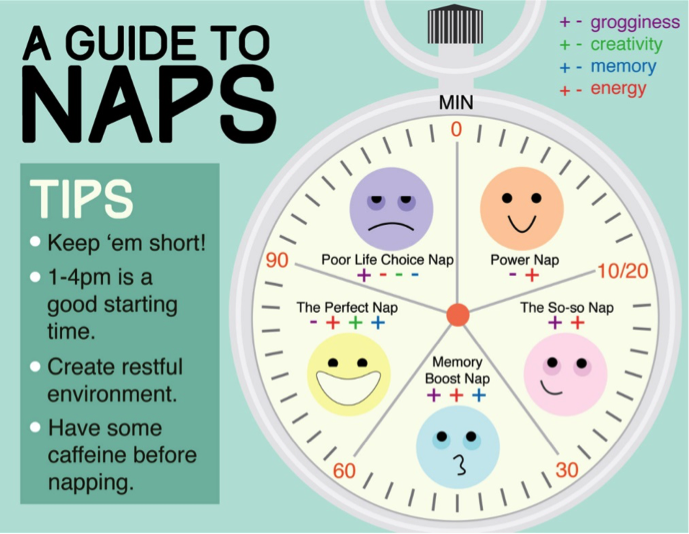

What is MEANTAL HEALTH?
Mental health is a state of well-being in which the individual realizes his or her own potential, can cope with the normal stresses of life, can work productively and is able to make a contribution to her or his own community.
What is MENTAL ILLNESS?
Mental illness refers to various mental disorders and health conditions defined by alterations in thinking, mood, or behaviour (or some combination thereof) associated with distress and/or impaired functioning
Mental health is just as important as physical health. For many knowing how to take care of their bodies is a no brainer...eat right, exercise, and get enough sleep. Easy, right? But we don’t always know how to maintain good mental health. It is normal for all of us to feel stressed, overwhelmed or down sometimes, especially at University. It is important to know how to identify your limits and take steps to effectively cope with these feelings.
Feeling stressed? All work and no play? It is important to set aside time every day to promote relaxation and escape the stress of university life. Listen to music, have a cup of tea, read a book, practice yoga, work on an art project, or go for a walk. Everyone deserves me-time, and it’s up to you to make time for yourself! Even a few episodes on netflicks, but know your limits. You could also try some relaxation techniques such as deep breathing, meditation, or muscle relaxation. All are ways to help reduce stress and induce relaxation.
Try this Breathing lessons app
Spending too much time on the couch watching netflicks? Moving around and getting the heart rate up causes the body to release endorphins, which are your body’s feel-good hormones. Exercising provides stress relief and if you can do it outside that’s even better. Fresh air is good for you, it helps you relax, and clears your mind. This will help you be more productive when it’s time to get back to work.
Try this 5 minute yoga app and the de-stress now!
Need a hug? Having friends who are willing to listen and support you through good and bad times is essential. Take time to nurture friendships and be PRO-social. Grab a coffee or tea, catch a movie, or take a walk together. Spending time with an animal can also help with stress. Studies show that pets have a calming effect and can even lower blood pressure.
Want to spend some time cuddling a dog or cat? Visit the Dal student health promotions event calendar to see when the puppy/kitten room is open
Too many late nights? The human body needs a chance to rest and repair itself after a long and stressful day. Sleeping rejuvenates the body and mind so you are ready to tackle another day. A full night’s sleep is important, but naps can also be very beneficial in reducing stress and giving you energy.
Track your sleep patterns today with this sleepbot app
Learn how to take the perfect nap from this great infographic!

What did you have to eat today? Eating foods that are good for you not only improve your physical health, but they play a major role in your mental health. When your body gets the proper nutrients, it is better able to function in every capacity. The odd chocolate bar can’t hurt either 😀
Here is a link to 5 foods that improve mental health!